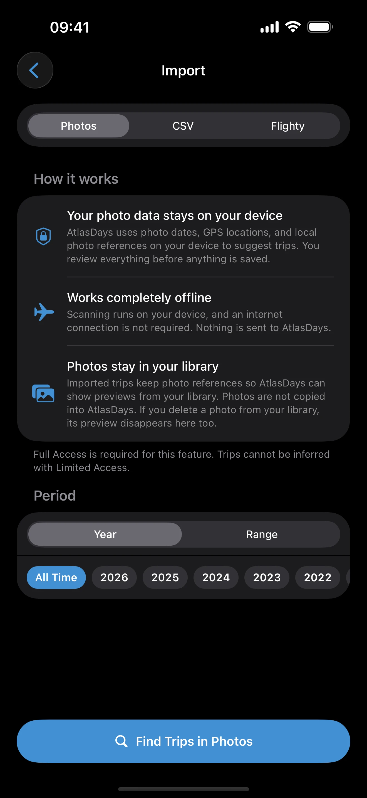

Photo Import
Last updated: July 10, 2026
Rebuild travel history from geotagged photo metadata, review inferred trips before saving, and understand privacy, duplicates, overlaps, transit detection, video evidence, and US state preservation.
What This Page Helps You Do
Use this page when you want AtlasDays to scan your photo library for travel evidence instead of entering every old trip manually or preparing a CSV file first.
By the end of this page, you should know:
- when Photo Import is the right tool and when manual entry, CSV import, or Flighty import is safer
- what Photos access is used for
- how AtlasDays turns photo metadata into trip suggestions
- what to check before saving imported trips
- what happens to photo previews after import
- why a scan might find no trips
Photo Import drafts trips for review. It does not silently add your whole photo history to the trip record. Nothing is saved until you review the suggestions and confirm the import.
When to Use Photo Import
Photo Import is useful when you have geotagged photos from past travel and want a faster first draft of your travel history. It is especially useful after onboarding, after a reinstall, or when your timeline is still mostly empty.
Use manual entry instead when only a few important trips matter, when you already know the exact dates, or when a trip affects a live visa, residency, or paperwork question and you want to enter it from source documents yourself.
Use CSV Import instead when your source is already a spreadsheet, booking export, passport-stamp notes, or another structured list. Use Flighty Import instead when your source is a Flighty flight-history export.
Where Photo Import Lives
Go to Settings > Import, choose Photos, then tap Find Trips in Photos. If your timeline is empty or you just finished onboarding, AtlasDays can also show an import prompt in Timeline.
Find Photos… in the Timeline menu is a separate tool. Instead of creating new trips, it scans your library to match geotagged photos to trips already in your timeline. Use it to add photo previews to existing trips without importing new ones.

You can scan a selected year, a preset range, or a custom date range. Photo Import itself is free for every available scan period. Pro changes how detected US states are preserved; it does not unlock older photo history.
What Photos Access Is For
AtlasDays asks for full Photos access because iOS requires it for an automatic library scan. Selected Photos access is not enough for the full-library scan. The scan reads metadata such as dates and locations. Altitude and media-type metadata can be used to filter out likely airplane-window photos, screenshots, and screen recordings.
- Photo Import runs on device.
- AtlasDays does not copy your photo files into its own database, analyze image contents, or upload your photos to an AtlasDays-operated server. Imported trips can show thumbnails or open related photos from your Photos library.
- The scan does not need an internet connection.
- AtlasDays uses bundled country boundaries on device to resolve photo locations to countries.
- Imported trips can store local photo references so AtlasDays can load previews from your Photos library later.
- You can skip Photo Import and keep using AtlasDays manually without Photos access.
How the Scan Works
AtlasDays looks for photo or video assets with usable date and GPS metadata, skips media that is unlikely to represent a real stay, then groups the remaining evidence by country and date.
Videos can help detect trips when they have readable dates and locations. They are used as evidence only; the preview gallery shows photos, not videos.
The result is a set of draft trip candidates. A candidate can be marked with warnings when it looks like a duplicate, overlaps another trip, was inferred from limited evidence, has gaps, or may be transit.
Photo Import can miss trips if photos have no location metadata, if camera location services were off, if the scan range excludes those dates, or if the available evidence is too thin to infer a clean stay.
US State Detection
When photos have GPS data from within the United States, AtlasDays can resolve those locations to individual states. How this appears in the review screen depends on your plan:
- AtlasDays Pro: US trips are split into per-state candidates. Each candidate shows the detected state alongside the country.
- Free plan: detected states appear as a preview without per-state import rows. Upgrade to Pro to import state-tagged trips.
In the review screen, use the US states found filter to focus on state-detected candidates. You can still edit the state, adjust dates, or remove any candidate before confirming the import. State-tagged trips can feed US State trackers and the full-screen state map; plain United States trips cannot identify which state should count.
Review Before Saving
After scanning, AtlasDays opens a review screen. Use it like a draft inbox, not like an automatic source of truth.
- Ready to import candidates are selected by default.
- Duplicates are skipped so they do not recreate trips already in your record.
- Overlaps are warnings. Review them before trusting downstream totals.
- Transit can be detected for short pass-through candidates, but you should still confirm it.
- US states appear as importable state-tagged candidates for Pro users and as a detected-state preview for free users.
- You can tap a candidate to edit its country, dates, purpose, transit state, and notes before import.
- You can deselect or delete candidates you do not want to save.
After Import: Photo Previews
Trips created from Photo Import can keep local photo references. AtlasDays uses those references to show thumbnails on trip cards and to open related photos from your Photos library.
- The photo files stay in Photos. AtlasDays does not copy them into its own trip database.
- If you delete a referenced photo from Photos, its preview can disappear from AtlasDays.
- If the original is stored in iCloud Photos, iOS may retrieve it through Apple's Photos services when you open it.
- Videos can help create a trip suggestion, but only photos appear in the trip photo preview gallery.
- If you revoke Photos access later, imported trips remain in your timeline, but thumbnails or fullscreen photo previews may stop loading.
If No Trips Are Found
A scan that finds no trips usually means AtlasDays could not find enough usable travel evidence in the selected range.
- Check that Photos access is set to Full Access. Selected Photos access is not enough for an automatic library scan.
- Check that the selected scan range includes the trip dates you expected to find.
- Photos need usable date and GPS metadata. Photos without location metadata cannot become location evidence.
- Screenshots, screen recordings, and likely airplane-window photos can be skipped.
- AtlasDays can exclude media that appears to have been received from someone else rather than captured by you, so another person's geotagged photo is less likely to become your trip.
- If a trip has only thin evidence, manual entry or CSV import may be more reliable.
When Imported Photo Trips Are Trustworthy Enough
Treat Photo Import as a reconstruction aid. It is good at finding likely travel from geotagged media, but the final trip record is only as trustworthy as the evidence and your review.
- Use imported trips as a starting point for old history, then verify important stays against stronger source material when needed.
- Review duplicates, overlaps, and transit badges before trusting dashboard totals or trackers.
- Confirm exact start and end dates for any trip that affects a live rule or paperwork question.
- Remember that photos without location metadata cannot prove where you were.
- After import, review the new trips in Timeline and clean up anything that still looks provisional.
Managing a Saved Photo Import
After saving, open Settings > Manage Imports to inspect imported batches. Use it when you need to review which trips came from a scan or remove an entire mistaken import together. Deleting an import batch removes the trips from that batch, so inspect the batch before confirming.
Common Photo Import Questions
Why does AtlasDays need Full Photos access?
Photo Import scans your library automatically for dated, geotagged photo evidence. iOS needs you to grant Full Access for that kind of scan. If you choose Selected Photos, AtlasDays cannot scan the full library for past trips.
Are my photos uploaded or analyzed?
No. The trip-drafting scan runs on your device and uses photo metadata such as dates, GPS locations, altitude, media type, and local photo references. AtlasDays does not upload your photo library to an AtlasDays-operated server and does not analyze the image contents.
Why did my home country appear as a trip?
Photo Import groups evidence by country and date. If you have geotagged photos in your home country, AtlasDays may draft those dates too. Delete or deselect home-country candidates that are not useful for your record, or keep them if they help explain a wider travel timeline.
Why are some trips marked Duplicate, Overlap, Transit, or based on limited evidence?
Duplicate means the candidate matches an existing trip and is skipped by default. Overlap means the dates share time with an existing trip and should be reviewed. Transit means AtlasDays detected a likely short pass-through stay. Limited-evidence candidates usually have thin evidence, near-border evidence, or inferred gaps.
What happens if I delete a photo or revoke Photos access?
The imported trip stays in your timeline, but photo previews depend on your Photos library. If you delete a referenced photo, its preview can disappear. If you revoke Photos access, thumbnails and fullscreen previews may stop loading until access is restored.
Will photo thumbnails work on another device?
Imported trips can store local photo references. If iCloud sync is on, the trip record can sync with the rest of your AtlasDays data, but the actual photo files remain managed by Apple Photos and iCloud Photos. A new device still needs Photos access, and previews depend on whether Apple Photos can resolve those referenced photos on that device.
Can Photo Import prove travel dates for paperwork?
Treat it as a reconstruction aid, not official proof. Use it to find likely stays, then verify important dates against passport stamps, tickets, accommodation records, emails, or other source material before relying on the record for visa, residency, tax, or legal questions.
What Photo Import Does Not Do
- It does not create official travel records.
- It does not prove exact border-crossing dates without your review.
- It does not upload or back up your photo library.
- It does not replace Auto-Detect Trips for future movement.
- It does not replace CSV import when your source material is already structured.
- It does not replace Flighty import when your source material is a Flighty flight-history export.
Where to go next
Trip Modes and Record Quality explains how to decide whether imported trips should be trusted as exact, adjusted, or cleaned up.
CSV Import is the better path when your source material is a spreadsheet or structured travel list.
Flighty Import is the better path when your source material is a Flighty flight-history export.
Dashboard and Map helps you verify the totals and country view after importing photo-based trips.
Trackers and Limits explains why imported trips still need review before you rely on a tracker.
Privacy, Location, and Sync covers Photos access, location permission, notifications, Auto-Detect Trips, and iCloud behavior in one place.